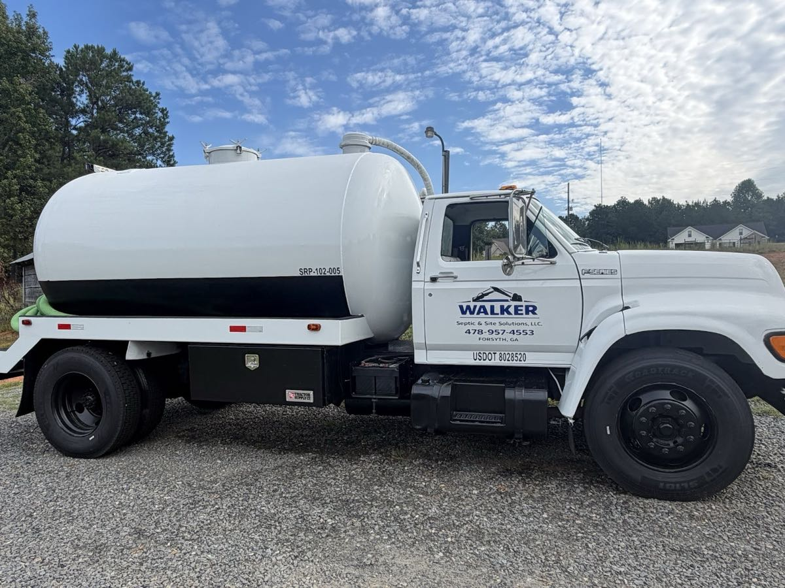
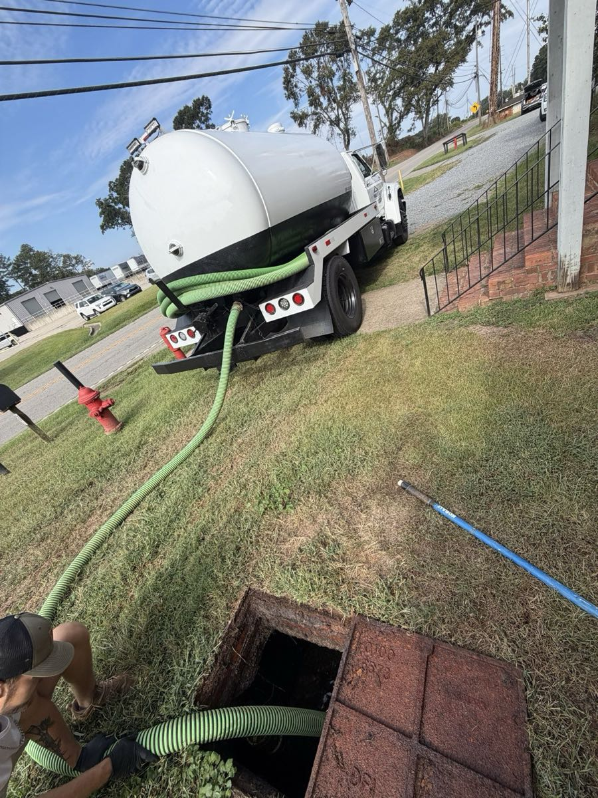
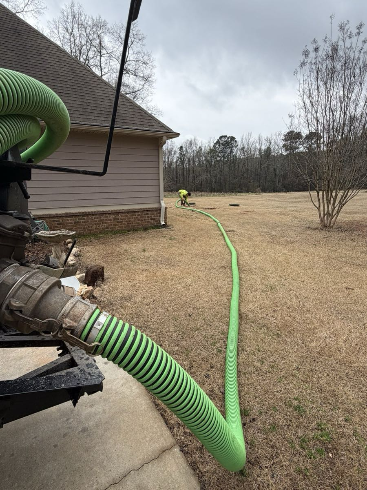
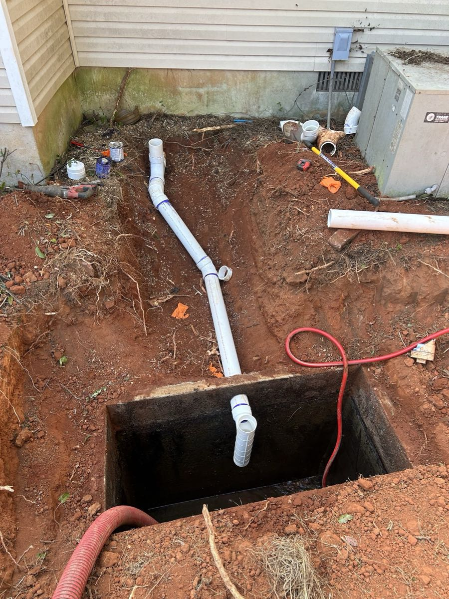
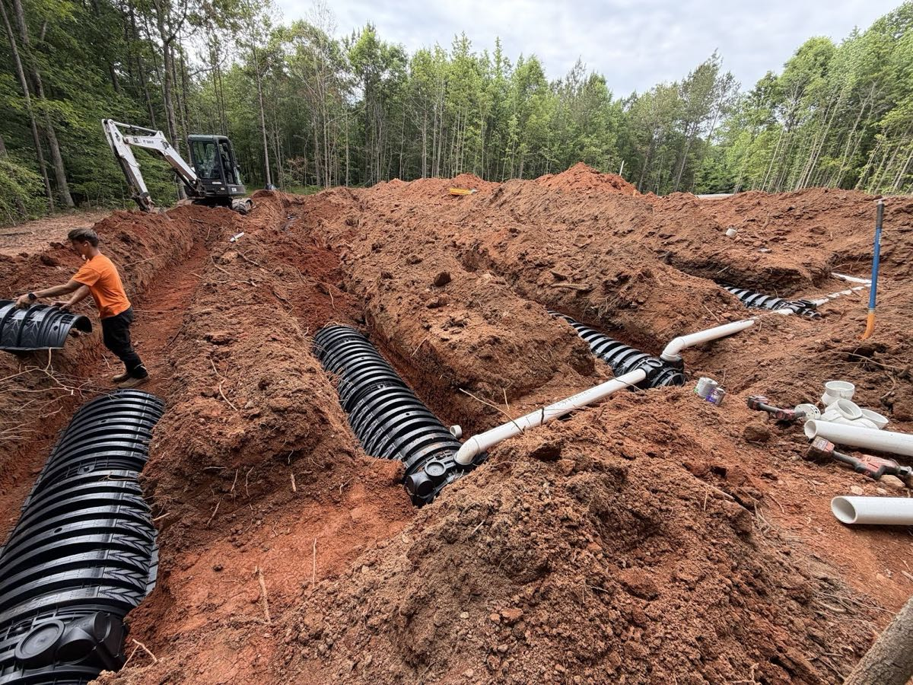
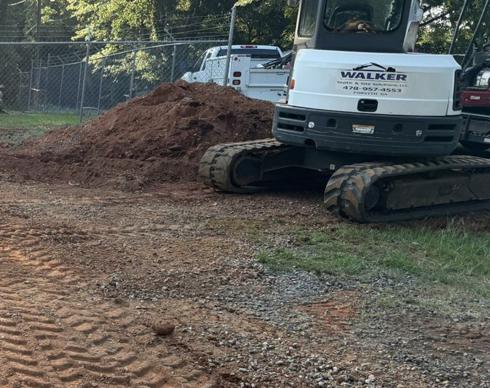
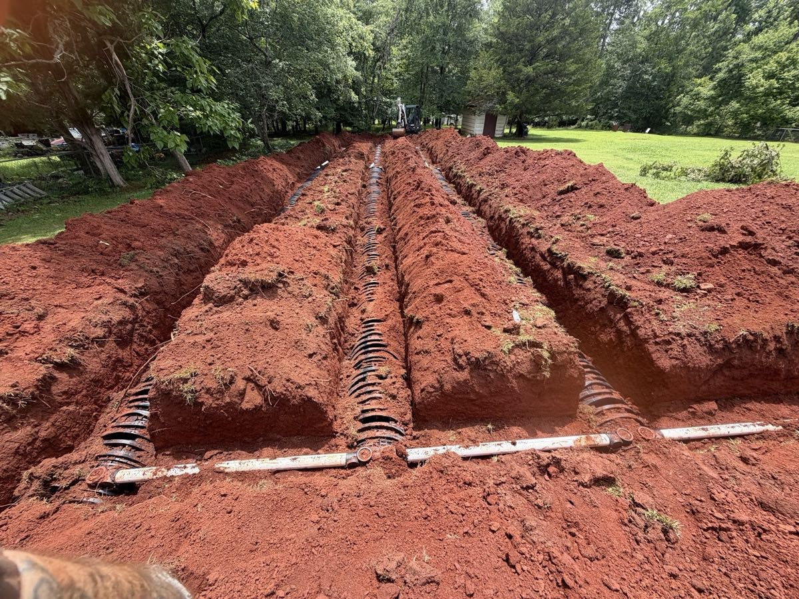
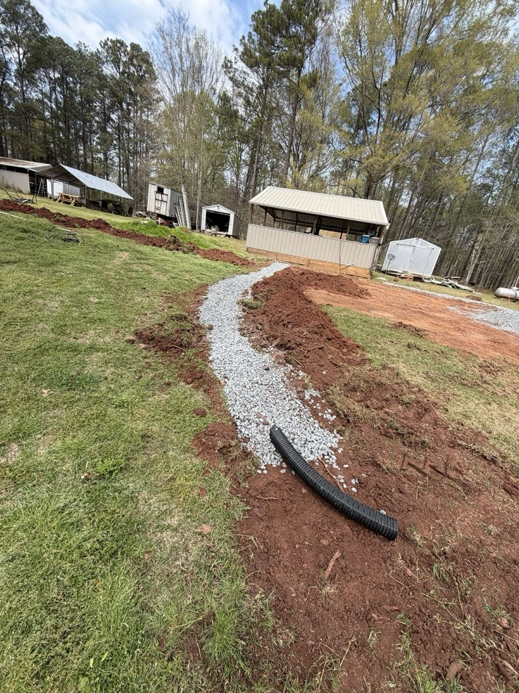
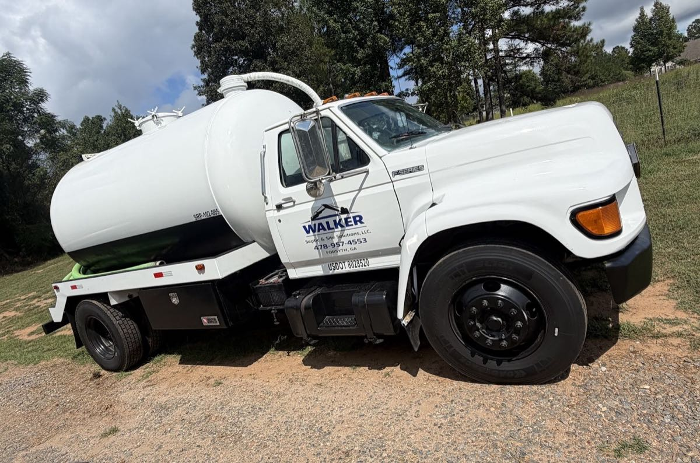
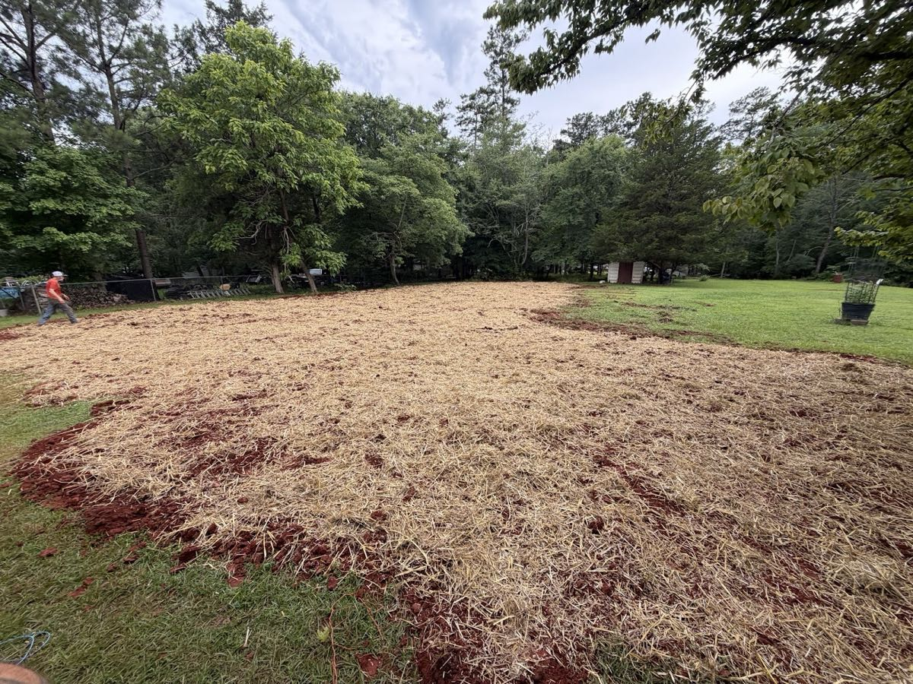

Forsyth, Georgia · Monroe & Lamar counties
Septic backing up?Evan picks up.
Walker Septic and Site Solutions is a locally owned, state-certified septic company based in Forsyth. Pumping, repairs, inspections, drain fields and new installs, with up-front pricing and no surprise fees.
Owner Evan Walker answers 24/7, nights and weekends included.

The Walker pump truckAnswered 24/7
Evan takes the call himself, nights and weekends included.
Up-front pricing
No surprise fees. A pump-out is all you pay for a pump-out.
State-certified
Licensed, insured and Georgia DPH certified.
Locally owned
Based in Forsyth, working Monroe, Lamar & Butts counties.
What we do
From pump-outs
to brand-new systems

01
Septic tank pumping
Pump-outs and tank cleaning for homes on septic. Most homes need it every 3 to 5 years.
Learn more
02
Emergency service
Backups, alarms and overflowing tanks. Evan answers the phone 24/7 and comes out fast.
Learn more
03
Repairs & sewer lines
Septic system repair, sewer repair, and septic pump & alarm repair.
Learn more
04
Septic inspections
Buying or selling? We check the tank and drain field and tell you plainly what we find.
Learn more
05
Drain field work
Drain field repair and full drain field replacement.
Learn more
06
New installs & sitework
Conventional and engineered septic systems, tank replacement, site prep and grading.
Learn moreThe Walker way
If all you need is a pump-out, that is all you pay.
What you get when you call
- The owner on the phone, any hour, any day.
- Up-front pricing, with no surprise fees.
- A plain answer about your tank and drain field.
- A licensed, insured, Georgia DPH certified crew.
Evan Walker, owner · 478-957-4553
Is it time?
Signs your tank
needs pumping
- 01Slow drains
- 02Gurgling pipes
- 03A soggy, smelly spot in the yard
- 04A septic alarm going off
Big crowd coming for the holidays? Extra showers, laundry and flushing can push a full tank over the edge. If it has been 3 to 5 years since your last pump-out, get it done before the guests arrive.
Pump-out check
Most homes need pumping every 3 to 5 years. When was yours last pumped?
Pick an answer to see where you stand.
Call Evan · 478-957-4553Septic care
Treat your drain field kindly
Your drain field does the quiet work of your septic system. A few habits keep it that way.
- 1Don't park or drive on it.
- 2Point gutters and sump water away from it.
- 3Plant only grass on top.
- 4Soggy spots or a sewage smell in the yard mean it's time to call.
From the job site
Red clay, real work
Photos from Walker Septic jobs: pump-outs, tank repairs and new drain fields.




What neighbors say
“Evan will get ya right”
Great company with honest, hardworking people who take pride in what they do. They pumped my tank and installed a riser for easier access and to prevent digging in the future. Highly recommend!
Evan made sure we understood the plan and kept us in the loop answering any questions we had. We got a great quote and even better service than we expected.
Evan with Walker Septic did an outstanding job! He was professional, knowledgeable, dependable, and great to work with. He took the time to explain everything and made sure the job was done right.
Evan and crew did a phenomenal job and were easy to communicate with. They had the best price we found, too!
Excerpts from reviews on the Walker Septic and Site Solutions Google Business Profile.
Buying or selling a home on septic?
Get the system checked before closing day. Our crew looks at the tank and drain field and tells you plainly what we find, so nobody gets a surprise after move-in.
Questions
Straight answers
How often should a septic tank be pumped?
Can I reach you at night or on the weekend?
Will there be extra charges?
Do you inspect septic systems for home sales?
Do you install new septic systems?
Where do you work?
Get in touch
Call Evan directly
The fastest way to get help is a phone call. Emergencies, quotes and scheduling all go to the same number.
- Phone478-957-4553
- HoursOpen 24 hours, 7 days a week